《神都少年》少儿国学电影节颁奖盛典
洛邑古城 2018年7月16日
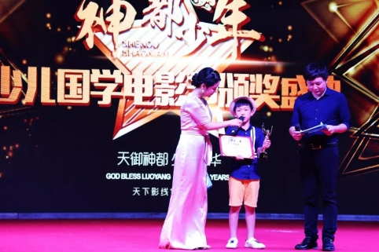
7月14日晚，首届《神都少年》少儿国学电影节颁奖盛典在洛邑古城忠义广场盛大开幕。
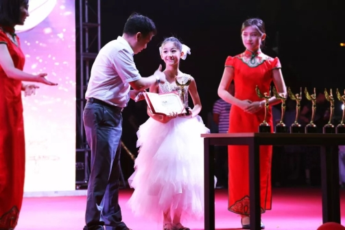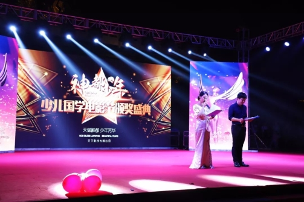
中央电视台中国互联网电视副主任郭新琴，中国商务新闻网政商头条直播中国副总监陈胜利，河南广播电视台综艺部副主任冯巍巍，电影《李小龙双节棍传奇》导演李向伟，电视剧《少林寺传奇》慧空扮演者王小龙，电影《富春山居图》美术指导程联合，北京电影学院青年导演仝冰冰，著名华语歌手刘爽，内地男演员季良军，知名女演员杨笑笑等出席本次颁奖盛典，并作为评审嘉宾为小演员们评奖、颁奖。中央电视台电影频道、CNTV中国网络电视、河南网络电视台、直播中国、爱奇艺、腾讯视频、今日头条、优酷视频等数十家媒体全程直播报道。
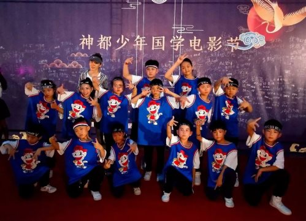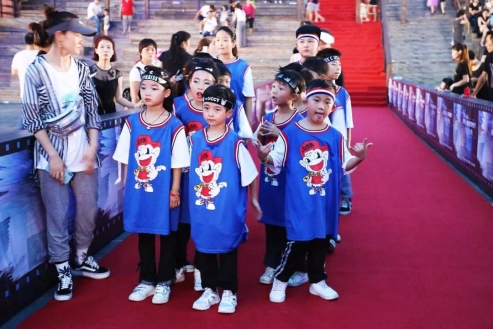
本次少儿国学电影节由洛阳天下影线传媒公司主办，北京雨之影视有限公司、横店奔跑狮王影业公司、嘉溢映画(北京)文化传媒联合协办，以宣扬国学文化，传承民族精神为活动主题，依托百集古装系列电影《神都少年》的成功拍摄，从上千名演员中选出最佳演员奖、最佳上镜奖、最佳才艺奖等15个奖项，邀请国内25位资深评审嘉宾为演员评奖、颁奖、颁发证书。
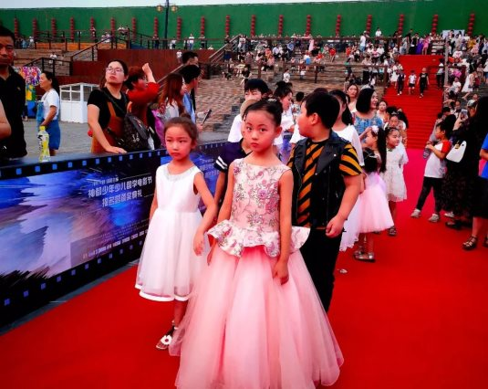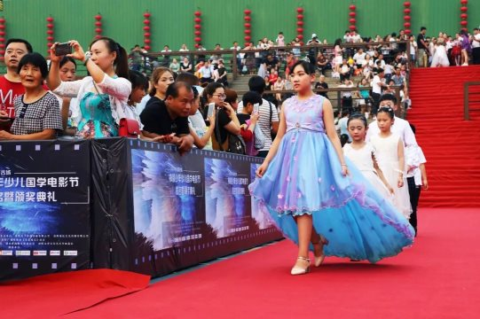
数百名小演员身着礼服，走上星光红毯，步入颁奖盛典现场。一张张稚嫩的小脸上洋溢着自信的笑容，一颦一笑，举手投足，颇具明星风范，吸引了现场媒体与观众的热烈目光。
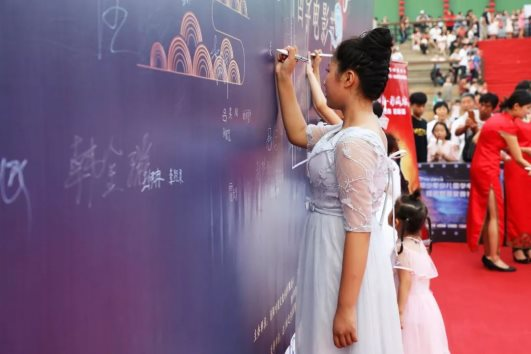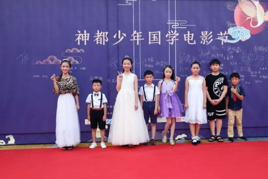
颁奖舞台上，获奖小演员们还为现场观众带来了精彩的节目，嘻哈街舞、民族舞蹈、古典乐器合奏等各种表演精彩纷呈，得到了现场评审嘉宾的高度赞誉。两千余名少儿演员及其家长、省内外著名影视艺术家欢聚一堂，共同为少儿国学电影节喝彩，为中国少儿影视事业呐喊助威。
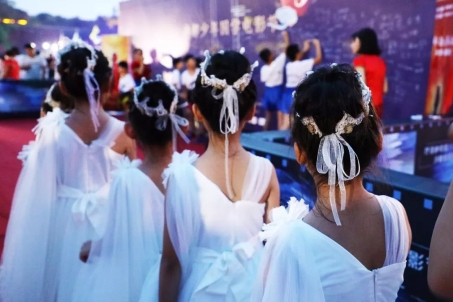
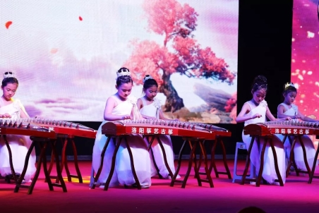
国学传承和发展要有趣味性，洛邑古城携手《神都少年》剧组，意在通过系列电影拍摄、电影节庆典等丰富形式，让每个孩子“学经典、演经典、品经典”，亲身体验电影拍摄的过程，在实践中提升文化、艺术素养。更为爱好表演、具有天赋的小艺术家们，提供一个最为广阔的展示舞台。